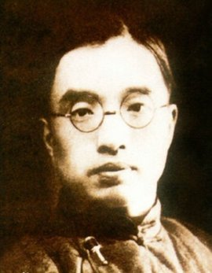

朱自清（1898年11月22日—1948年8月12日），原名自华，号秋实，后改名自清，字佩弦。原籍浙江绍兴，出生于江苏省东海县（今连云港市东海县平明镇）。现代杰出的散文家、诗人、学者、民主战士。
1916年中学毕业并成功考入北京大学预科。1919年开始发表诗歌。1928年第一本散文集《背影》出版。1932年7月，任清华大学中国文学系主任。1934年，出版《欧游杂记》和《伦敦杂记》。1935年，出版散文集《你我》。
1948年8月12日因胃穿孔病逝于北平，年仅50岁。
- 踪迹
- 背影
- 你我
- 欧游杂记
- 伦敦杂记
- 标准与尺度
